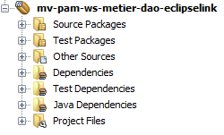
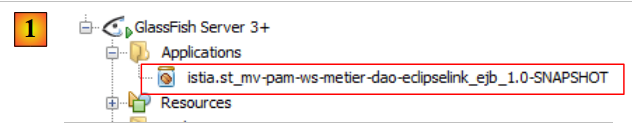
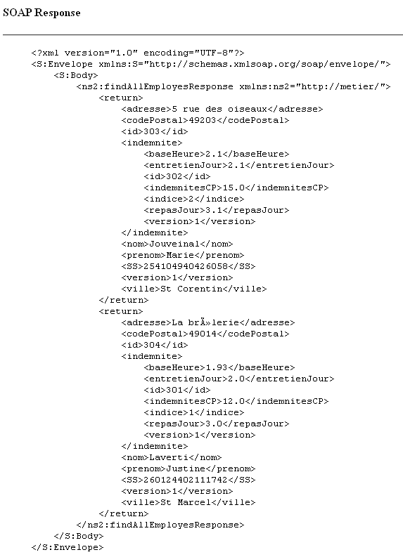
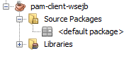
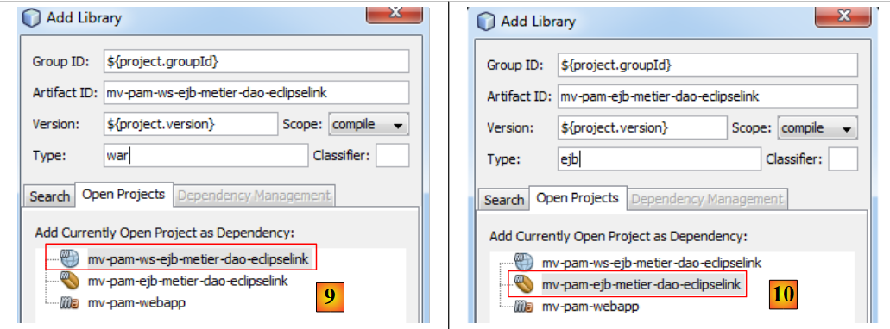
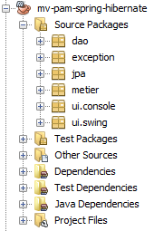

8. Versie 4 – client/server in een webservice-architectuur
In deze nieuwe versie zal de applicatie [Pam] in client/server-modus draaien binnen een webservice-architectuur. Laten we nog eens terugkijken naar de architectuur van de vorige applicatie:
 |
Hierboven zorgde een communicatielaag [C, RMI, S] voor transparante communicatie tussen de client [ui] en de externe laag [metier]. We gaan een vergelijkbare architectuur gebruiken, waarbij de communicatielaag [C, RMI, S] wordt vervangen door een laag [C, HTTP / SOAP, S]:
 |
Het protocol HTTP / SOAP heeft ten opzichte van het vorige protocol RMI / EJB het voordeel dat het platformonafhankelijk is. Zo kan de webservice in Java worden geschreven en op de Glassfish-server worden geïmplementeerd, terwijl de client een .NET- of PHP-client kan zijn.
We gaan deze architectuur in drie verschillende modi ontwikkelen:
- de webservice wordt verzorgd door de EJB [Metier]
- de webservice wordt verzorgd door een webapplicatie die gebruikmaakt van EJB en [Metier]
- de webservice wordt verzorgd door een webapplicatie die gebruikmaakt van Spring
Een webservice kan op verschillende manieren worden geïmplementeerd binnen een Java-server EE:
- via een klasse met de annotatie @WebService die in een webcontainer wordt uitgevoerd
 |
- via een met @WebService geannoteerde EJB die wordt uitgevoerd in een EJB-container
 |
We beginnen met deze laatste architectuur.
8.1. Webservice geïmplementeerd door een EJB
8.1.1. Het servergedeelte
8.1.1.1. Het NetBeans-project
Laten we beginnen met het aanmaken van een nieuw Maven-project, een kopie van het project EJB [mv-pam-ejb-metier-dao-jpa-eclipselink]:
 |
Met de volgende architectuur:
 |
De laag [metier] wordt de webservice die door de laag [ui] wordt aangeroepen. Deze klasse hoeft geen interface te implementeren. Het zijn annotaties die een POJO (Plain Ordinary Java Object) omzetten in een webservice. De klasse [Metier], die de bovenstaande laag [metier] implementeert, wordt als volgt omgezet:
package metier;
...
@WebService
@Stateless()
@TransactionAttribute(TransactionAttributeType.REQUIRED)
public class Metier implements IMetierLocal,IMetierRemote {
// verwijzingen naar de lagen [DAO]
@EJB
private ICotisationDaoLocal cotisationDao = null;
@EJB
private IEmployeDaoLocal employeDao=null;
@EJB
private IIndemniteDaoLocal indemniteDao=null;
// loonstrook ophalen
@WebMethod
public FeuilleSalaire calculerFeuilleSalaire(String SS,
...
}
// lijst met werknemers
@WebMethod
public List<Employe> findAllEmployes() {
...
}
// belangrijk – geen getters en setters voor de EJB
}
- regel 4: de annotatie @WebService maakt van de klasse [Metier] een webservice. Een webservice stelt methoden beschikbaar aan zijn clients. Deze moeten worden geannoteerd met het attribuut @WebMethod.
- regels 19 en 25: de twee methoden van de klasse [Metier] worden methoden van de webservice.
- regel 29: het is belangrijk dat de getters en setters worden verwijderd, anders worden ze in de webservice blootgesteld en dit leidt tot beveiligingsfouten.
Het toevoegen van deze annotaties wordt gedetecteerd door NetBeans, dat vervolgens de aard van het project aanpast:
 |
In [1] is een boomstructuur [Web Services] in het project verschenen. Daarin bevinden zich de webservice Metier en de twee bijbehorende methoden. De serverapplicatie kan worden geïmplementeerd in [2]. De server MySQL moet worden gestart en de bijbehorende database [dbpam_eclipselink] moet bestaan en gevuld zijn. Het kan nodig zijn om eerst [3] en EJB uit het eerder besproken client-/serverproject EJB te verwijderen om naamconflicten te voorkomen. Ons nieuwe project bevat namelijk dezelfde EJB als het vorige project.
 |
In [1] zien we dat onze applicatie serveur is geïmplementeerd op de Glassfish-server. Zodra de webservice is geïmplementeerd, kan deze worden getest:
 |
- in [1], in het huidige project, testen we de webservice [Metier]
- de webservice is toegankelijk via verschillende URL. Met de URL en [2] kan de webservice worden getest
- in [3], een link naar het bestand XML waarin de webservice is gedefinieerd. Klanten van de webservice moeten de URL van dit bestand kennen. Op basis daarvan wordt de clientlaag (stubs) van de webservice gegenereerd.
- in [4,5], een formulier waarmee de door de webservice aangeboden methoden kunnen worden getest. Deze worden weergegeven met hun parameters, die de gebruiker kan instellen.
Laten we bijvoorbeeld de methode [findAllEmployes] testen, die geen parameters vereist:
 |
Hierboven testen we de methode. We ontvangen dan het onderstaande antwoord (gedeeltelijke weergave). We zien daar inderdaad de twee werknemers met hun vergoedingen. De lezer wordt uitgenodigd om op dezelfde manier de methode [4] te testen door de drie vereiste parameters door te geven.

8.1.2. Het clientgedeelte
 |
8.1.2.1. Het NetBeans-project van de client -console
We maken nu een Java-project van het type [Java Application] voor het client-gedeelte van de applicatie. Het was (juni 2012) niet mogelijk om een Maven-project voor deze client aan te maken. Er treedt een fout op, die op het internet bekend lijkt te zijn, maar nog steeds niet is opgelost.
 |  |
Zodra het project is aangemaakt, geven we aan dat het een client zal zijn van de webservice die we zojuist op de Glassfish-server hebben geïmplementeerd:
 |
- in [2] selecteren we het nieuwe project en klikken we op de knop [New File]
- in [3] geven we aan dat we een webservicecliënt willen aanmaken
 |
- met [4], wijzen we het NetBeans-project van de webservice aan
- in het venster [5] worden alle projecten met een branch weergegeven; in [Web Services] is hier alleen het project [mv-pam-ws-metier-dao-eclipselink] te zien.
- Een project kan meerdere webservices implementeren. In [6] selecteren we de webservice waarmee we verbinding willen maken.
 |
- In [7] wordt de URL met de definitie van de webservice weergegeven. Deze URL wordt gebruikt door de softwaretools die de clientlaag genereren die met de webservice zal communiceren.
 |
- De clientlaag [C] [1] die zal worden gegenereerd, bestaat uit een reeks Java-klassen die in één pakket worden ondergebracht. De naam hiervan is vastgesteld op [8].
- Zodra de wizard voor het aanmaken van de webserviceclient is voltooid met de knop [Finish], wordt de hierboven genoemde laag [C] aangemaakt.
Dit komt tot uiting in een aantal wijzigingen in het project:
- In de hierboven genoemde [10] verschijnt een boomstructuur [Generated Sources] die de klassen van de laag [C] bevat, waarmee de client [3] met de webservice kan communiceren. Deze laag stelt de client [3] in staat om te communiceren met de lagen [metier] en [4] alsof deze lokaal zijn en niet op afstand.
- In [11] verschijnt een boomstructuur [Web Service References] waarin de webservices worden weergegeven waarvoor een clientlaag is gegenereerd.
Opgemerkt moet worden dat we in de gegenereerde laag [C] [10] klassen aantreffen die aan de serverzijde zijn geïmplementeerd: Indemnite, Cotisation, Employe, FeuilleSalaire, ElementsSalaire, Metier. Metier is de webservice en de andere klassen zijn klassen die nodig zijn voor deze service. Misschien ben je nieuwsgierig om hun code te bekijken. Je zult zien dat de definitie van de klassen – die, wanneer ze geïnstantieerd zijn, objecten vertegenwoordigen die door de webservice worden verwerkt – bestaat uit de definitie van de velden van de klasse en hun accessors, evenals het toevoegen van annotaties die de serialisatie van de klasse in de XML-stream mogelijk maken. De klasse Metier is een interface geworden met daarin de twee methoden die zijn geannoteerd met @WebMethod. Elk van deze methoden leidt tot twee klassen, bijvoorbeeld [CalculerFeuilleSalaire.java] en [CalculerFeuilleSalaireResponse.java], waarbij de ene de aanroep van de methode inkapselen en de andere het resultaat ervan. Ten slotte is de klasse MetierService de klasse waarmee de client een verwijzing naar de externe bedrijfswebservice kan krijgen:
Met de methode getMetierPort op regel 2 kan een verwijzing naar de externe Metier-webservice worden verkregen.
8.1.2.2. De console-client van de bedrijfswebservice
Nu hoeven we alleen nog maar de client voor de Metier-webservice te schrijven. We kopiëren de klasse [MainRemote] uit het project [mv-pam-client-metier-dao-jpa-eclipselink] – dat een client was van een server EJB – naar het nieuwe project.
 |
- in [1], de klasse van de webserviceclient. De klasse [MainRemote] bevat fouten. Om deze te corrigeren, verwijderen we eerst alle bestaande [import]-instructies uit de klasse en genereren we deze opnieuw met de optie [Fix Imports]. Sommige klassen die door de klasse [MainRemote] worden gebruikt, maken nu namelijk deel uit van het gegenereerde pakket [client].
- In [3] is het stukje code waarin de laag [metier] wordt geïnstantieerd, [3]. Dit gebeurt met code JNDI om een verwijzing naar een extern EJB te verkrijgen.
We passen de code als volgt aan:
- de code JNDI wordt verwijderd
- aangezien de klasse [PamException] aan de clientzijde niet bestaat, verwijderen we de bijbehorende catch om alleen de catch op de bovenliggende klasse [Exception] te behouden.
 |
- in [4] moeten we nog een verwijzing naar de externe webservice [Metier] verkrijgen om de methode [calculerFeuilleSalaire] te kunnen aanroepen.
- In [5] slepen we met de muis de methode [calculerFeuilleSalaire] vanuit de webservice [Metier] naar [4]. Er wordt code gegenereerd: [6]. Deze generieke code kan vervolgens door de ontwikkelaar worden aangepast.
 |
- op regel 112 zien we dat [calculerFeuilleSalaire] een methode is van de klasse [client.Metier] (regel 111). Nu we weten hoe we de laag [metier] kunnen verkrijgen, kan de voorgaande code als volgt worden herschreven:
Op regel 7 wordt een verwijzing naar de webservice Metier opgehaald. Als dat eenmaal is gebeurd, verandert de code van de klasse niet, behalve dan dat op regel 10 niet de uitzondering van het type [Exception] wordt afgehandeld, maar het meer algemene type Throwable, de bovenliggende klasse van de klasse Exception. Als er een uitzondering optreedt, geven we alle geneste oorzaken daarvan weer tot aan de oorspronkelijke oorzaak.
We zijn klaar voor de tests:
- controleer of SGBD MySQL5 wordt gestart, of de database dbpam_eclipselink is aangemaakt en geïnitialiseerd
- controleer of de webservice is geïmplementeerd op de Glassfish-server
- de client bouwen (Clean and Build)
- de uitvoering van de client configureren
 |
- voer de client uit
De resultaten in de console zijn als volgt:
Met de volgende configuratie:

krijgt men de volgende resultaten:
Opgemerkt moet worden dat, terwijl de webservice [Metier] een uitzondering van het type [PamException] verstuurt, de uitzondering die door de client wordt ontvangen van het type [SOAPFaultException] is. Zelfs in de uitzonderingsketen komt het type [PamException] niet voor.
8.1.3. De Swing-client van de webservice Metier
Te doen: de Swing-client van het project [mv-pam-client-ejb-metier-dao-jpa-eclipselink] overzetten naar het nieuwe project, zodat ook deze een client wordt van de webservice die op de Glassfish-server is geïmplementeerd.
8.2. Webservice geïmplementeerd door een webapplicatie
We bevinden ons nu in de context van de volgende architectuur:
 |
De webservice wordt verzorgd door een webapplicatie die wordt uitgevoerd binnen de webcontainer van de Glassfish-server. Deze webservice maakt gebruik van de EJB [Metier], die op zijn beurt is geïmplementeerd in de EJB3-container.
8.2.1. Het servergedeelte
We maken een webapplicatie aan:
 |
- in [1] maken we een nieuw project
- in [2]; dit project is van het type [Web Application]
- in [3] geven we het de naam [mv-pam-ws-ejb-metier-dao-eclipselink]
 |
- in [4] kiezen we de Java-versie EE 6
- in [6], het aangemaakte project
In het onderstaande schema wordt de aangemaakte webapplicatie uitgevoerd in de webcontainer. Deze maakt gebruik van de EJB en [Metier], die op hun beurt worden geïmplementeerd in de EJB-container van de server.
 |
Om ervoor te zorgen dat de aangemaakte webapplicatie toegang heeft tot de klassen die gekoppeld zijn aan de EJB [Metier], voegen we aan de bibliotheken van de webapplicatie [mv-pam-ws-ejb-metier-dao-eclipselink] toe, de afhankelijkheid van de reeds besproken server EJB [mv-pam-ejb-metier-dao-eclipselink] toe.
 |
- in [1] voegen we een project toe aan de afhankelijkheden van het webproject,
- in [2] selecteren we het project [mv-pam-ejb-metier-dao-eclipselink],
- in [3] is het type van de afhankelijkheid ejb,
- in [4] is het bereik van de afhankelijkheid provided, dat wil zeggen dat deze door de uitvoeringsomgeving wordt geleverd,
- in [5] is de afhankelijkheid toegevoegd.
Om dezelfde webservice als eerder te maken, moeten we:
- een klasse aanmaken met de tag @Webservice
- met twee methoden calculerFeuilleSalaire en findAllEmployes met de tag @WebMethod
We maken een klasse [PamWsEjbMetier] aan in een pakket [pam.ws]:
 |
 |
De klasse [PamWsEjbMetier] ziet er als volgt uit:
- regels 7-10: de klasse importeert klassen uit de module EJB en [pam-serveurws-metier-dao-jpa-eclipselink], waarvan het Maven-project is toegevoegd aan de afhankelijkheden van het project.
- regel 12: de klasse is een webservice
- regel 13: deze implementeert de interface IMetier die is gedefinieerd in de module EJB
- regels 18-19: de methode calculerFeuilleSalaire wordt blootgesteld als methode van de webservice
- regels 23-24: de methode findAllEmployes wordt als methode van de webservice blootgesteld
- regels 15-16: de lokale interface van EJB [Metier] wordt in het veld van regel 16 ingevoerd. We gebruiken de lokale interface omdat de webapplicatie en de module EJB in dezelfde JVM worden uitgevoerd.
- regels 20 en 25: de methoden calculerFeuilleSalaire en findAllEmployes delegeren hun verwerking aan de gelijknamige methoden van de EJB [Metier]. De klasse dient dus alleen om de methoden van EJB en [Metier] aan externe clients aan te bieden als methoden van een webservice.
In NetBeans wordt de webapplicatie herkend als een applicatie die een webservice aanbiedt:
 |
Om de webservice op de GlassFish-server te implementeren, moeten we zowel:
- de webmodule in de webcontainer van de server
- de module EJB in de EJB-container van de server
Hiervoor moeten we een applicatie van het type [Enterprise Application] aanmaken die beide modules tegelijkertijd implementeert. Hiervoor moeten beide projecten in NetBeans [2] worden geladen.
Zodra dit is gebeurd, maken we een nieuw project aan met de naam [3].
 |
- in [4] kiezen we een projecttype [Enterprise Application].
- in [5] geven we het project een naam
 |
- in [6], we configureren het project. De Java-versie van EE wordt Java EE 6. Een bedrijfsproject kan worden aangemaakt met twee modules: een EJB-module en een webmodule. In dit geval omvat het bedrijfsproject de webmodule en de EJB-module die al zijn aangemaakt en in NetBeans zijn geladen. We vragen dus niet om nieuwe modules aan te maken.
- In [7] is het zo aangemaakte bedrijfsproject [mv-pam-webapp-ear] opgenomen. Tegelijkertijd is er nog een ander Maven-project aangemaakt: [mv-pam-webapp]. Daar zullen we ons niet mee bezighouden.
- In [8] voegen we afhankelijkheden toe aan het bedrijfsproject
 |
- in [9] voegen we het webproject van het type WAR toe,
- in [10] voegen we het EJB-project EJB toe,
 |
- in [11], het bedrijfsproject met zijn twee afhankelijkheden.
We bouwen het bedrijfsproject met een Clean and Build. We zijn bijna klaar om het op de Glassfish-server te implementeren. Vooraf kan het nodig zijn om de applicaties die al op de server zijn geladen te verwijderen om mogelijke naamconflicten te voorkomen tussen EJB en [11]:
 |
De server MySQL moet zijn gestart en de database [dbpam_eclipselink] moet beschikbaar en gevuld zijn. Zodra dit is gebeurd, kan de bedrijfsapplicatie [12] worden geïmplementeerd. In [13] is te zien dat deze inderdaad op de Glassfish-server is geïmplementeerd.
We kunnen de zojuist geïmplementeerde webservice testen:
 |
- in [1] vragen we om de webservice [PamWsEjbMetier]
- naar [2], de testpagina. We laten het aan de lezer over om de tests uit te voeren.
8.2.2. Het clientgedeelte
Opdracht: bouw, volgens de in paragraaf 8.1.2.1 beschreven werkwijze, een consoleclient voor de voorgaande webservice.
8.3. Webservice geïmplementeerd met Spring en Tomcat
We bevinden ons nu in de context van de volgende architectuur:
 |
De webservice wordt verzorgd door een webapplicatie die wordt uitgevoerd binnen de webcontainer van de Tomcat-server. De architectuur van de applicatie ziet er als volgt uit:
 |
We zullen voortbouwen op het project [mv-pam-spring-hibernate] dat in paragraaf 5.11 is opgezet:
 |
8.3.1. Het servergedeelte
We maken een web-Maven-applicatie met de naam [mv-pam-ws-spring-tomcat] [1]:
 |
We passen het bestand [pom.xml] aan om de volgende afhankelijkheden [2] toe te voegen:
<dependencies>
<dependency>
<groupId>${project.groupId}</groupId>
<artifactId>mv-pam-spring-hibernate</artifactId>
<version>${project.version}</version>
</dependency>
<!-- Apache CXF-afhankelijkheden -->
<dependency>
<groupId>org.apache.cxf</groupId>
<artifactId>cxf-rt-frontend-jaxws</artifactId>
<version>2.2.12</version>
</dependency>
<dependency>
<groupId>org.apache.cxf</groupId>
<artifactId>cxf-rt-transports-http</artifactId>
<version>2.2.12</version>
</dependency>
</dependencies>
- regels 3-7: de afhankelijkheid van het project [spring-pam-jpa-hibernate],
- regels 8-17: de afhankelijkheden van het Apache-framework CXF en [http://cxf.apache.org/]. Dit framework vergemakkelijkt het maken van webservices.
Dit bestand [pom.xml] brengt talrijke afhankelijkheden [2] met zich mee.
Laten we teruggaan naar de architectuur van de applicatie:
 |
De aanroepen naar de webservice die we gaan bouwen, worden afgehandeld door een servlet van het framework CXF. Dit komt in het bestand [WEB-INF / web.xml] als volgt tot uiting:
<?xml version="1.0" encoding="UTF-8"?>
<web-app version="2.5" xmlns="http://java.sun.com/xml/ns/javaee" xmlns:xsi="http://www.w3.org/2001/XMLSchema-instance" xsi:schemaLocation="http://java.sun.com/xml/ns/javaee http://java.sun.com/xml/ns/javaee/web-app_2_5.xsd">
<display-name>mv-pam-ws-spring-tomcat</display-name>
<listener>
<listener-class>org.springframework.web.context.ContextLoaderListener</listener-class>
</listener>
<!-- Configuratie van CXF -->
<servlet>
<servlet-name>CXFServlet</servlet-name>
<servlet-class>org.apache.cxf.transport.servlet.CXFServlet</servlet-class>
<load-on-startup>1</load-on-startup>
</servlet>
<servlet-mapping>
<servlet-name>CXFServlet</servlet-name>
<url-pattern>/ws/*</url-pattern>
</servlet-mapping>
<session-config>
<session-timeout>
30
</session-timeout>
</session-config>
<welcome-file-list>
<welcome-file>index.jsp</welcome-file>
</welcome-file-list>
</web-app>
- Het framework CXF is afhankelijk van Spring. Regels 4-6: er wordt een listener gedeclareerd. De bijbehorende klasse wordt tegelijk met de webapplicatie geladen. Deze maakt gebruik van het Spring-configuratiebestand [WEB-INF / applicationContext.xml]:
 |
- regels 8-12: de servlet CXF die de aanroepen naar de webservice zal afhandelen die we gaan maken,
- regels 13-16: de URL-verzoeken die door de servlet CXF worden verwerkt, zullen van het type /ws/* zijn. De overige verzoeken worden niet door CXF verwerkt.
Om de webservice te definiëren, definiëren we een interface en de bijbehorende implementatie:
 |
De interface [IWsMetier] ziet er als volgt uit:
package pam.ws;
import javax.jws.WebService;
import metier.IMetier;
@WebService
public interface IWsMetier extends IMetier{
}
- regel 7: de interface [IWsMetier] is afgeleid van de interface [IMetier] van de laag [métier] van het project [mv-pam-spring-hibernate],
- regel 6: de interface [IWsMetier] is die van een webservice.
De implementatieklasse van deze interface is de volgende:
package pam.ws;
import java.util.List;
import javax.jws.WebMethod;
import javax.jws.WebService;
import jpa.Employe;
import metier.FeuilleSalaire;
import metier.IMetier;
@WebService
public class PamWsMetier implements IWsMetier {
// bedrijfslaag
private IMetier metier;
// constructor
public PamWsMetier(){
}
@WebMethod
public FeuilleSalaire calculerFeuilleSalaire(String SS, double nbHeuresTravaillees, int nbJoursTravailles) {
return metier.calculerFeuilleSalaire(SS, nbHeuresTravaillees, nbJoursTravailles);
}
@WebMethod
public List<Employe> findAllEmployes() {
return metier.findAllEmployes();
}
// getters en setters
public void setMetier(IMetier metier) {
this.metier = metier;
}
}
- regel 11: de klasse [PamWsMetier] implementeert de eerder gedefinieerde interface,
- regel 10: definieert de klasse als een webservice,
- regel 14: de laag [métier] wordt door Spring geïnjecteerd,
- regels 21, 26: de annotatie @WebMethod maakt van een methode een methode die door de webservice wordt blootgesteld,
- regels 23, 28: de methoden worden geïmplementeerd met behulp van de laag [métier].
Nu moeten we nog de inhoud van het Spring-configuratiebestand [applicationContext.xml] definiëren:
 |
De inhoud ervan is als volgt:
<?xml version="1.0" encoding="UTF-8"?>
<beans xmlns="http://www.springframework.org/schema/beans" xmlns:xsi="http://www.w3.org/2001/XMLSchema-instance"
xmlns:tx="http://www.springframework.org/schema/tx"
xmlns:jaxws="http://cxf.apache.org/jaxws"
xsi:schemaLocation="http://www.springframework.org/schema/beans
http://www.springframework.org/schema/beans/spring-beans-2.0.xsd
http://www.springframework.org/schema/tx
http://www.springframework.org/schema/tx/spring-tx-2.0.xsd
http://cxf.apache.org/jaxws
http://cxf.apache.org/schemas/jaxws.xsd">
<!-- Apache CXF -->
<import resource="classpath:META-INF/cxf/cxf.xml" />
<import resource="classpath:META-INF/cxf/cxf-extension-soap.xml" />
<import resource="classpath:META-INF/cxf/cxf-servlet.xml" />
<!-- lagere lagen -->
<import resource="classpath:spring-config-metier-dao.xml" />
<!-- webservice -->
<bean id="wsMetier" class="pam.ws.PamWsMetier">
<property name="metier" ref="metier"/>
</bean>
<jaxws:endpoint id="wsmetier"
implementor="#wsMetier"
address="/metier">
</jaxws:endpoint>
</beans>
- regels 13-15: Apache-configuratiebestanden CXF worden geïmporteerd. Deze worden gezocht in het Classpath-bestand van het project (attribuut classpath:),
- regels 4, 9, 10: er worden Apache-specifieke naamruimten CXF gedeclareerd,
- regel 18: het Spring-configuratiebestand van het project [mv-pam-spring-hibernate] wordt geïmporteerd,
- regels 21-23: definiëren de webdienst-bean met zijn afhankelijkheid van de [métier]-laag (regel 22),
- regels 24-27: hierin wordt de webservice zelf gedefinieerd,
- regel 25: de Spring-bean die de webservice implementeert, is degene die op regel 21 is gedefinieerd;
- regel 26: definieert de URL waarop de webservice beschikbaar zal zijn, in dit geval /metier. In combinatie met de vorm die de door Apache verwerkte URL-URL’s moeten hebben (zie bestand CXF), wordt deze URL /ws/metier.
Ons project is klaar om te worden uitgevoerd. We voeren het uit (Run) en roepen de URL [http://localhost:8080/mv-pam-ws-spring-tomcat/ws] op in een browser:

De pagina toont een overzicht van alle geïmplementeerde webservices. In dit geval is er slechts één. We volgen de link WSDL:
 |
De weergegeven tekst [1] is afkomstig uit een bestand XML waarin de functionaliteiten van de webservice worden gedefinieerd, hoe deze kan worden aangeroepen en welke antwoorden deze terugstuurt. Let op de URL [2] van dit bestand WSDL. Alle klanten van de webservice moeten deze kennen.
8.3.2. Het clientgedeelte
Opdracht: bouw, volgens de in paragraaf 8.1.2.1 beschreven werkwijze, een consoleclient voor de hierboven genoemde webservice.
Opmerking: om de URL van het bestand WSDL van de webservice aan te geven, gaat men als volgt te werk:
 |
We verplaatsen de eerder in [2] genoteerde URL naar [3].